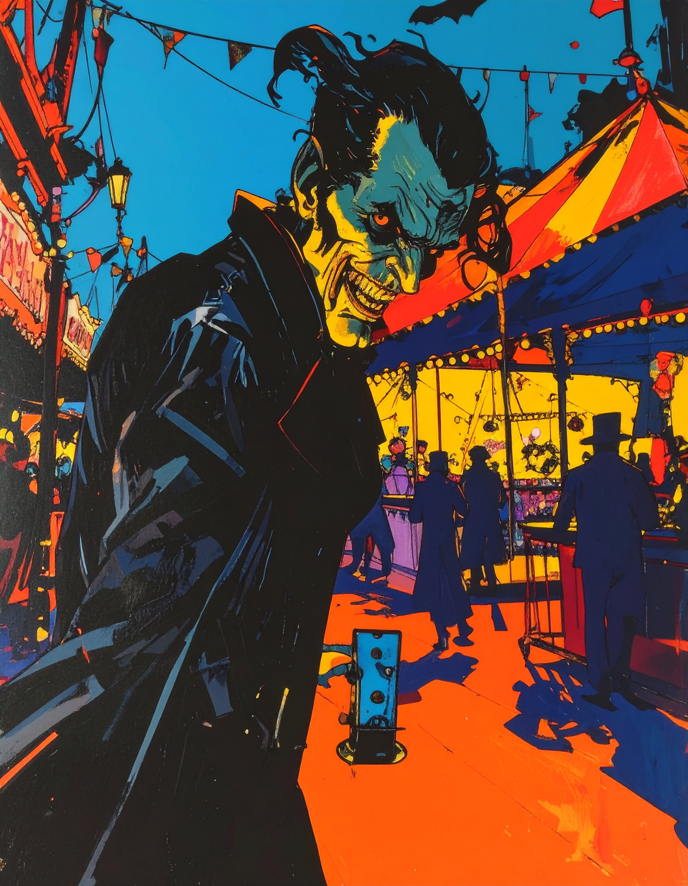
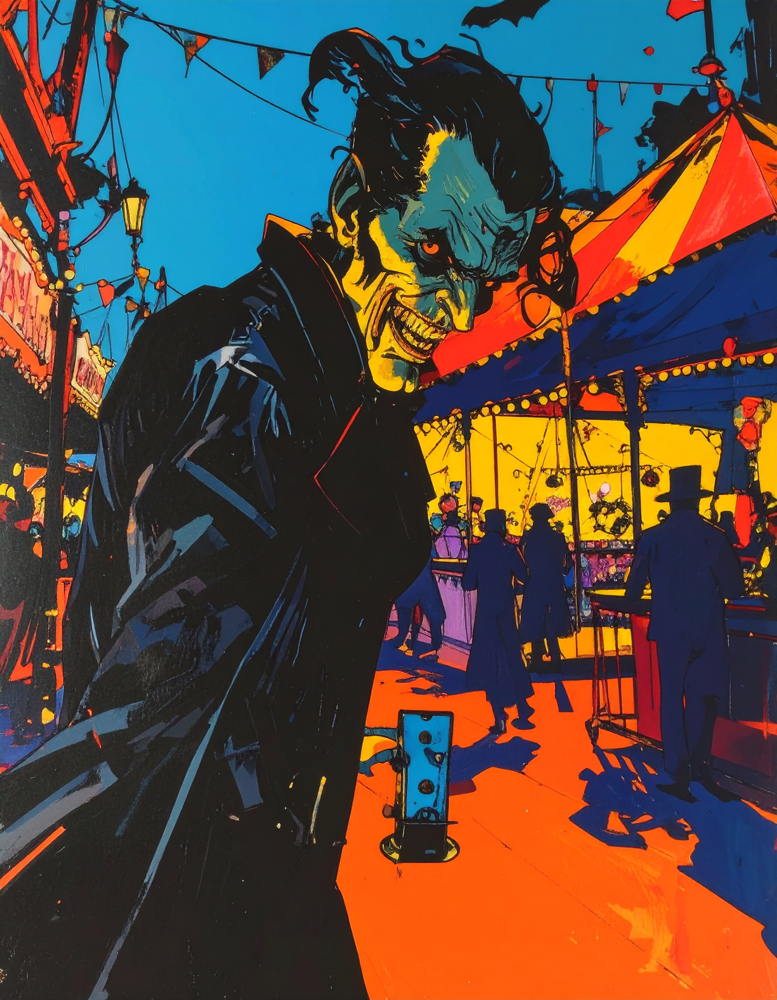
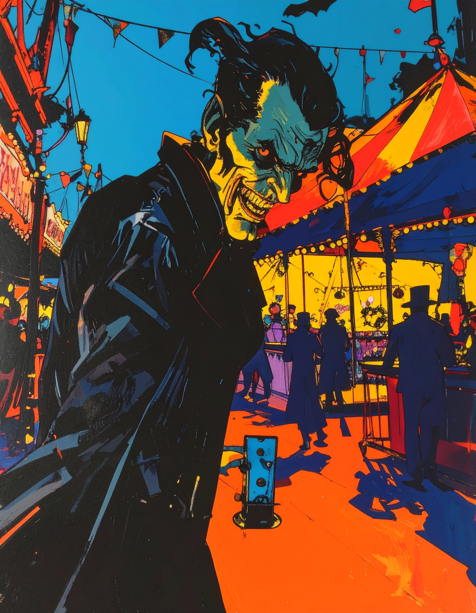

Jack the Ruiner is a shady fiend that can't figure out how to make more money honestly. He ruins fun events and trips by price gouging, adding secret fees, upcharges and he can even release swarms of Ancillary Aliens or even unleash ATM the Barbarian to pile on more tricks!
In real life, Jack the Ruiner represents all "trapped pricing" price gouging schemes, hidden resort, cleaning fees or upcharges that you have no choice but to pay. Think of booking a hotel for $200 a night, but then they add $20 more for "cleaning" or "resort fun" you didn't ask for. It's like paying extra for toys you don't use! Always read the full price before a trip to stop him. Jack the Ruiner also ruins your trip with "trapped market price gouging." This is when you are charged an absurd price for items that are cheap outside of the business you are at. This is when you are at an amusement park and you pay $10 for a $1 bottle of water. You are trapped and are price gouged. That drains the money you had for fun potentially ruining your good time! Jack the Ruiner Strikes!
